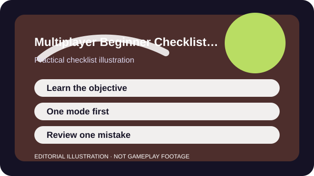

QUICK ANSWER
The short version
Define success as understanding the mode, not proving your talent. Learn one map or mode, use pings early, and leave each session with one concrete next question.
Beginners often judge themselves before they understand what the match is asking for. That creates bad habits fast: unnecessary settings changes, role swapping after every loss, and frustration rooted in confusion rather than in performance.
A better start treats early matches as orientation. Your job is to understand the win condition, the pace of danger, and the safe default action when you are unsure—not to prove that you belong in the lobby already.

CHECKLIST
What to confirm before you change anything
- Know how the round, race, or objective actually ends before you care about individual score lines.
- Play one mode or map repeatedly instead of trying to learn the whole game at once.
- Turn on or learn the game's pings, subtitles, and objective markers early.
- Set one tiny mechanical goal per session such as movement, recoil control, or timing.
- End each play block by writing down one question the game still did not answer clearly.
This checklist keeps the first ten matches narrow enough to learn from. If every match has a different role, map, and goal, nothing sticks.
SCENARIO
Your first group night in a game everyone else already knows
Joining friends who know the game can feel efficient, but it also creates pressure to copy their pace before you understand the basics. That often leads to silent following, panic deaths, and no memory of why the strong players moved the way they did.
The fix is to ask for one stable assignment: hold this lane, follow this route, ping this target, revive only when safe. A narrow job lets you see the shape of the game without pretending you can already do every job on the team.
PROCESS
A repeatable way to work through it
Define the win condition first
If you cannot explain what ends the round or how progress is measured, every personal stat becomes misleading.
Shadow one dependable pattern
Follow a reliable route, teammate, or role long enough to understand why it works before improvising.
Add only one mechanical focus
Trying to improve recoil, communication, map memory, and abilities all at once hides the real lesson.
Leave with one next-step question
A good beginner session ends with a clear curiosity, not with a vague feeling of being overwhelmed.
After ten matches, review what became clearer on its own and what still required outside explanation. That split tells you whether the game is onboarding you reasonably or expecting too much self-teaching for your taste.
COMMON MISTAKES
What usually makes the problem worse
Jumping into ranked immediately
Ranked pressure magnifies confusion and tempts you to treat every early loss as proof you picked the wrong game.
Changing role or class every time you die
Constant role swapping makes the entire game feel random even when it is not.
Talking about blame instead of information
New players learn faster from pings, timing, and position calls than from emotional post-mortems in the middle of the round.
SUCCESS CRITERIA
How to know the change actually worked
- You can explain the win condition and one safe default action when you are uncertain.
- You survive longer because you recognize danger and spacing earlier.
- You know which role, mode, or weapon you want to explore next instead of feeling equally lost everywhere.
- The game feels less noisy because key information has started to stand out.
A successful first ten matches do not make you look advanced. They make the game intelligible enough that the eleventh match teaches you something instead of merely overwhelming you again.
SOURCES AND LIMITS
Where to verify live details
- Each game has its own vocabulary, timers, and community culture, so this checklist stays intentionally general.
- Toxic lobbies may require mute, block, or group-only play before the advice here can work well.
- Accessibility needs may change which mode or role is the true beginner-friendly option for you.
Menu names, defaults, and device behavior can change after updates. Use the linked official support surfaces for the current live details and keep this guide for the process around them.